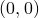
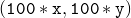

The infrastructure is now completely set up, and you are ready to start designing slides. As an example, we will now design a short talk which might be presented to by the Principal Conductor of the International Feline Chamber Chorus.
Run the script compile and leave it running in the background. Pyxplot will then re-run the scripts describing your slides whenever you edit them.
As an example, we will now make a title slide. Paste the following script into the file scripts/0001:
set output 'slides/0001.gif'
load 'scripts/slide_init'
text '\parbox[t]{10cm}{\center \LARGE \bf \
An Experiment in the Training \\ \
of Cats to Sing Bach Chorales \
} ' at x*50, y*75
text '\Large \bf Sir Archibald Dribbles' at x*50, y*45
text '\parbox[t]{9cm}{\center \
Principal Conductor, \\ \
International Feline Chamber Chorus \
} ' at x*50, y*38
text 'Annual Lecture, 1st January 2008' at x*50, y*22
load 'scripts/slide_finish'
Note that the variables x and y are defined to be 1 per cent of the width and height of your slides respectively, such that the bottom-left of each slide is at  and the top-right of each slide is at .
Next we will make a second slide with a series of bullet points. Paste the following script into the file scripts/0002:
set output 'slides/0002.gif'
load 'scripts/slide_init'
text '\Large \textbf{Talk Overview}' at x*50, y*92
text "\parbox[t]{9cm}{\begin{itemize} \
\item Teaching cats to use their head voices. \
\item The Suzuki Method, as adapted to cats. \
\item Case Study I: {\it Wachet auf, das Katzenfutter \
ist angerichtet!}, BWV~140. \
\item Rhythmical Devices: Synchronised Purring. \
\item Case Study II: {\it Was eine Katze will, das \
g'scheh' allzeit}, BWV~92. \
\item Conclusion. \
\end{itemize} \
} " at x*50 , y*60
set textcol cyan
text '{\bf With thanks to my collaborator, \
Pebbles Poofslop.}' at x*50,y*15
load 'scripts/slide_finish'
Finally, we will make a third slide with a graph on it. Paste the following script into the file scripts/0003:
set output 'slides/0003.gif'
load 'scripts/slide_init'
text '\Large \bf The Results of Our Model' at x*50, y*92
set axescolour yellow ; set nogrid
set origin x*17.5, y*20 ; set width x*70
set xrange [0.01:0.7]
set xlabel '$x$'
set yrange [0.01:0.7]
set ylabel '$f(x)$'
set palette Red, Green, Orange, Purple
set key top left
plot x t 'Model 1', exp(x)-1 t 'Model 2', \
log(x+1) t 'Model 3', sin(x) t 'Model 4'
load 'scripts/slide_finish'
To view your slides, run the script make_slides. Afterwards, you will find your slides as a series of pixel jpeg images in the directory slides_cropped. If you have the Quick Image Viewer (qiv) installed, then you can view them as follows:
qiv slides_cropped/*
If you’re in a hurry, you can skip the step of running the script make_slides and view your slides as images in the slides directory, but note that the slides in here may not be properly cropped. This approach is generally preferable when viewing your slides in a semi-live fashion as you are editing them.
If you’d like to make the text on your slides larger or smaller, you can do so by varying the scale parameter in the file scripts/slide_init.
The three slides which we have designed can been seen in Figures , and .